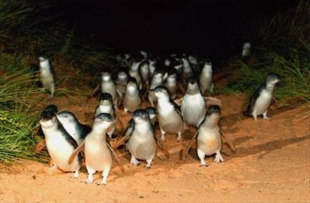

提起澳洲的动物，人们常常首先想到的便是那些悠然自得的考拉，它们在树上睡眼惺忪，展现出一种天真而憨厚的魅力；还有那些活力四射的袋鼠，据说它们从不后退，总是勇往直前，象征着永不言败的精神。
在我心中，最难忘的却是另一种动物——神仙企鹅。
我曾以为企鹅只生活在遥远的南极冰原上，那里冰冷而偏远，是它们唯一的家。但在澳洲菲利普岛，我惊奇地发现，这些蓝色的小精灵竟然也在这温暖的海岛上欢快地舞动。它们身披灰蓝色的羽毛，闪烁着银色的光泽，既温柔又神秘。那纯净的眼神中似乎藏着无尽的故事，让人忍不住想要靠近聆听。只一眼，我便深深地被这些神奇的生灵所吸引。
那天，我们从熙攘的墨尔本出发，驱车前往菲利普岛。沿途，澳大利亚的壮丽景色一幕接一幕地展开，令人心旷神怡。中文导游用亲切的广东普通话向我们讲述着菲利普岛的故事，他说：“到澳洲旅游若不去菲利普岛欣赏企鹅，就如同到了北京却错过长城。”这，更增加了我们对即将见证的奇景的期待。
夜色渐浓，我们终于来到了岛边的海滩。露天看台上已经聚集了来自世界各地的观众，各种肤色、各种服饰、各种发型。有的裹着毯子，还有人带着望远镜，脸上都洋溢着对即将上演的自然奇观的期待。我在人群中，感受着来自四面八方的声音和气息。心中油然升起一种感觉：好像是来到了上海大剧院，每个人都在等待同一场景的上演。我闭上眼睛，深呼吸，海风拂过我的脸颊，这样的时刻，整个世界似乎都静止了，等待着小企鹅在月光下的归来。
阵阵海风带来凉意，空中飘落细雨，我们在后排坐下，这样的气候让等待变得有些漫长，但也增添了几分神秘感。人们安静地坐着，耳语声轻柔。我的视线穿过缕缕薄雾，注视着远方模糊的海面，心中既充满了期待，又有些许不安：这些小精灵能否准时归巢？我想象着它们在海中的前行，勇敢而坚定。
突然，一阵细微的骚动在人群中传开。我激动地抬起头，不远处的海浪中，一群小企鹅正勇敢地冲上岸来。它们抖落身上的水珠，用心地梳理羽毛，然后谨慎地、有节奏地向前移动。宛如一场精心编排的舞蹈，它们的到来，优雅而和谐。
每一个动作，每一个眼神，都对周围的一切保持着警惕，它们小心翼翼地避开可能的威胁，透露出小生命的智慧。
很快，我听到了一阵阵期待已久的叫声，那是小企鹅们对家人的呼唤。这些声音充满了对归巢的渴望与欢迎。我看到了巢穴中好奇的小脑袋，小企鹅们正在巢口迎接，有的甚至蹒跚学步地走了出来，好似在寻找着亲人的身影。
每一个企鹅家庭都在上演着自己的团圆故事。我凝视着这些勤劳的小企鹅。它们自清晨起就出海觅食，在波涛中畅游整日，尽管已筋疲力尽，仍带着捕获的鱼，一步一步坚毅地归巢。这一刻，我被这些小小生命打动，它们对生活是那样的热爱，对家庭是那样的执着。人类，永远被大自然的生命力治愈着。
（本文刊登在2024.4.16《杨浦时报》）
